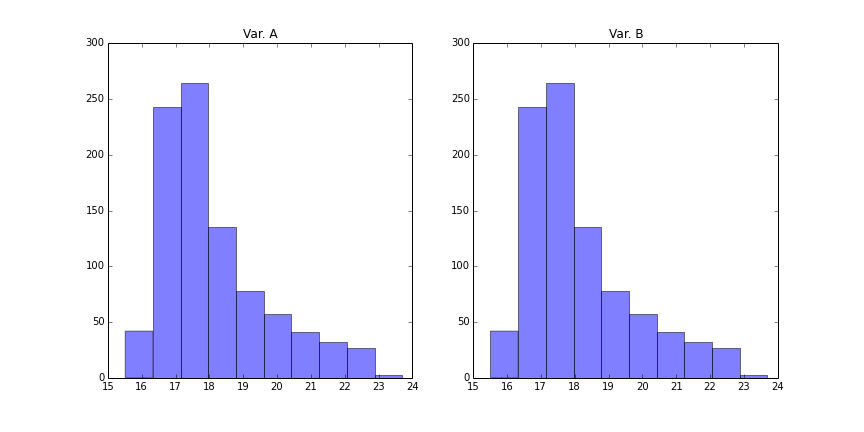
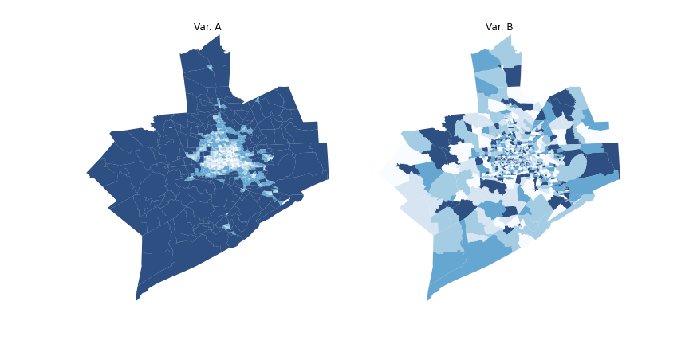

Spatial Data, Analysis, and Regression - I
A mini-course
Dani Arribas-Bel
Purpose
- Overview of (some) statistical techniques that explicitly include space
- Focus on methods directed at Social Scientists (lattice data)
- Computer labs to demonstrate how to perform some of these analysis (scheduling "roughly" split 50-50, but accomodating content)
Philosophy
Pointing more than delving deep
- Today ∈ All but $All \notin Today$
- References
Interactive classes → Stop, interrupt and ask me!!!
Things we will not talk about...
... but could also be called spatial modelling:
- Point pattern analysis
- Spatial prediction (geostatistics, kriging...)
- Conditional models
- Bayesian estimation
Outline
First block
Morning:
- Spatial data for social scientists
- Why spatial analysis?
- Spatial autocorrelation
After-noon:
- Spatial weights matrices
- The spatial lag operator
Exploratory Spatial Data Analysis (ESDA)
- Global
- Local
Second block
Spatial regression
- Motivation
- Specification
- Diagnostics
- Estimation
- Software implementation
Labs
Inserted between lecture time to be closer to the contents
- [I] GIS: QGIS
- [II] Exploratory analysis: GeoDa
- [III] Spatial regression: GeoDaSpace
- [IV] Code: PySAL
Spatial data
- Observations that can be related to a location in (geographical) space
- Multiple formats:
1. Points (e.g. firms)
2. Lines (e.g. Streets)
[Ben Fry. All Streets]
3. Polygons (e.g. regions)
4. Surfaces (e.g. elevation)
Increasing relevance:
- Popularization of locational technologies (e.g. GPS)
- "Data-fication" of the world (Big Data, open data, IoT... Much of this has a spatial footprint)
- Increase in: computational power + storage + open source
What's the point of spatial?


Some processes of interest for social scientists have a strong spatial dimension → where is a legitimate question in itself and is at the heart of the mechanisms that explain them. For example:
- Residential population distribution and (lack of) mixing
- Employment (urban centers, regional concentration of industries...)
- Income
- ...
- Non-spatial techniques completely ignore this aspect and do not provide tools to gain insight about issues where location plays a role
Spatial analysis provides a set of statistical tools that expand the amount of insight to be learnt from a given dataset, beyond what non-spatial methods allow for
Spatial Autocorrelation
Inter-dependence mediated through space
- Spatial randomness
- Positive spatial autocorrelation
- Negative spatial autocorrelation
Spatial randomness
- Completely random allocation of values across space
- Space plays no role whatsoever
- Traditional assumption in the non-spatial world but the exception rather than the rule in practice
Positive
- Closer values are more similar to each other than further ones
- Tobler's first law of Geography
- Present in many social science phenomena
Negative
- Closer values are more dissimilar to each other than further ones
- Harder to interpret, but associated with spatial competition
- Example: retail location
→ Demo lattice
Dependence Vs. heterogeneity
- Dependence → Interaction, interdependence
Heterogeneity → Intrinsic characteristics unevenly distributed over space
- With a cross-section, hard (impossible) to tell whether outcomes arise from interaction or from intrinsic individual characteristics
Spatial dependence Vs. Spatial heterogeneity
- Positive spatial autocorrelation → spatial difussion / spillovers
- Negative spatial autocorrelation → spatial competition
Same problem as in social networks: intrinsic individual characteristics or personal interaction (see this video for a great explanation)?

Spatial Data, Analysis and Regression - A mini course by Dani Arribas-Bel is licensed under a Creative Commons Attribution-NonCommercial-ShareAlike 4.0 International License.